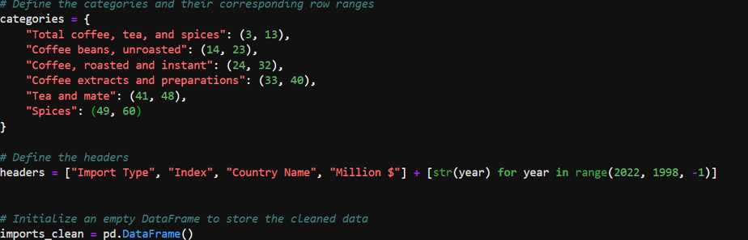
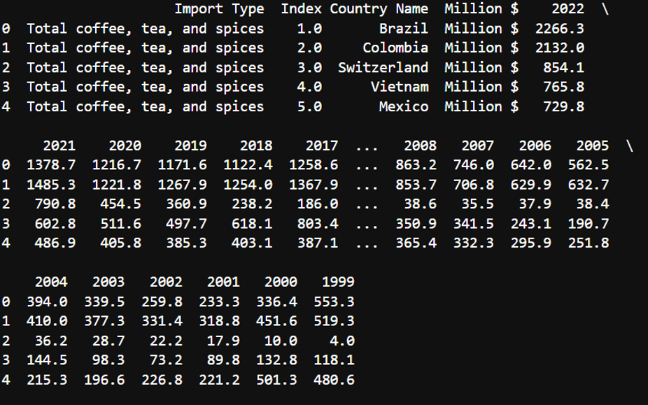
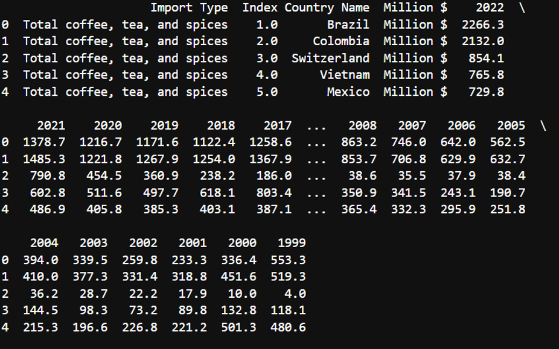
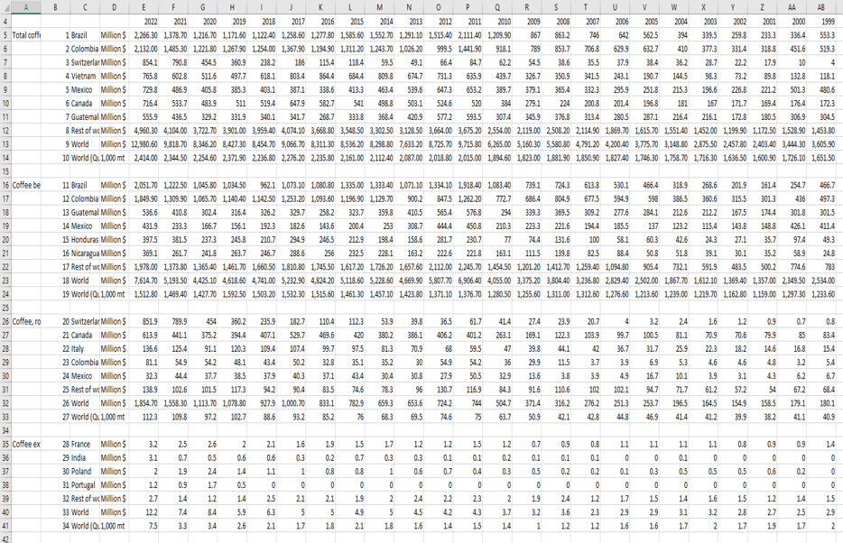
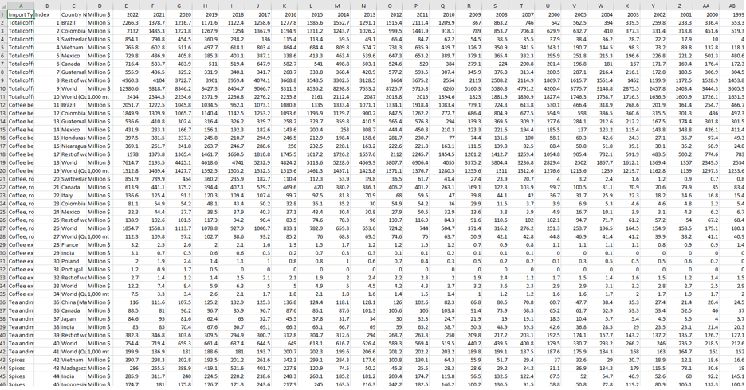
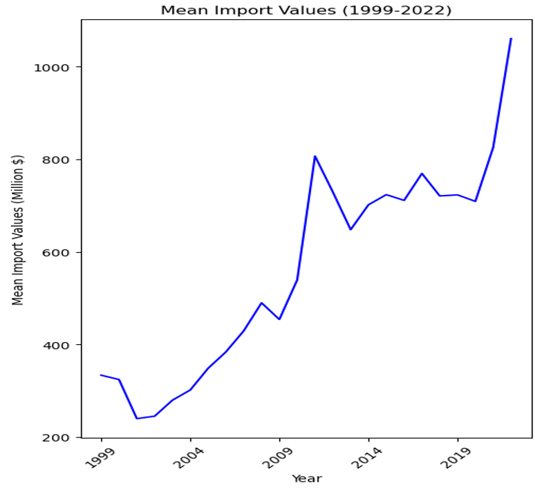
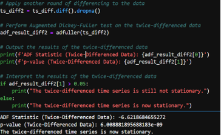
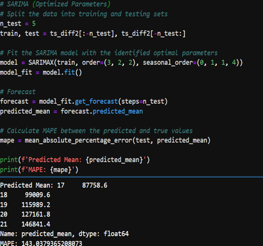
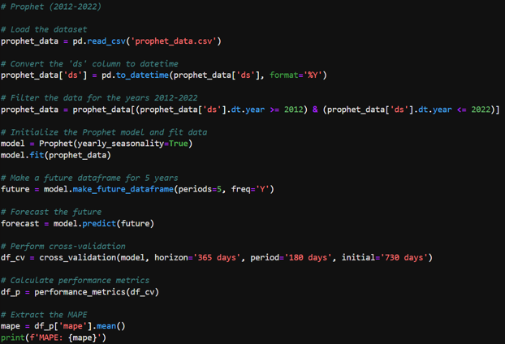

D214 - Data Analytics Graduate Capstone
The Data Analytics Graduate Capstone allows students to apply the academic and professional abilities developed as a graduate student. This capstone challenges students to integrate skills and knowledge from several program domains into one project.
Course Analysis
This course is structured around three main tasks:
Task 1: Capstone Approval and Release Form
The majority of time for this task was revolved around finding a suitable topic for analysis that would be challenging and interesting, while also having a real world use case. I spent maybe several hours alone just looking into various datasets, mostly on Kaggle, downloading several and conducting EDA to attempt to find a dataset that I would like to work with for the entirety of the course. In the end I decided to settle on U.S. Food Imports Data sourced from United States Department of Agriculture. The dataset can be found here U.S. Food Imports.
Task 2: Data Analytics Report and Executive Suummary
For Task 2, we will define the Research Question and Hypothesis to test for the analysis of the US Foods Imports Data. In this task the following analysis steps will be performed: Data Collection, Data Extraction/Preparation and Exploratory Data Analysis.
Research Question and Hypothesis
Research Question: To what extent can the future import values of specific food commodities such as coffee, teas, and spices into the United States be predicted using time series forecasting models?
Hypothesis
- Null Hypothesis (H0): The import values of coffee, tea, and spices into the United States for the upcoming year cannot be predicted with an accuracy of 90% using the Mean Absolute Percentage Error (MAPE) as a metric for model performance.“
- Alternative Hypothesis (H1): The import values of coffee, tea, and spices into the United States for the upcoming year can be predicted with an accuracy of 90% or more using the Mean Absolute Percentage Error (MAPE) as a metric for model performance.
Data Collection
For this project I titled “Brewing Trends”, I obtained a comprehensive dataset from the United States Department of Agriculture (USDA). This dataset details the import values of various food commodities, including coffee, into the United States over the past 20 years. The data, structured annually, provides insights into the volume and value of food imports and includes key variables such as types of food commodities, year of import, the value of these imports in millions. The primary method of data collection was searching the internet for reliable sources of data such as government data. For this project, I used a dataset provided by the USDA, which can be found on their official website, as well as data.gov.
Data Extraction/Preparation
Objective of this step will be to extract and prepare the data for use in a time series analysis. Tools and Techniques used is as follows:
Python (Anaconda Environment):
- Usage: Served as the primary programming language for data manipulation and analysis.
- Advantage: Python offers extensive libraries and frameworks that simplify data analysis and model development. Examples include pandas, numpy, matplotlib, and sklearn.
- Disadvantage: Python can be less efficient in terms of execution speed compared to lower-level languages like C++.
Jupyter Notebook (Anaconda Environment):
- Usage: Jupyter Notebook provided an interactive environment for executing Python code, enabling real-time data manipulation and visualization.
- Advantage: It allows for an interactive coding environment with the ability to visualize data and outputs immediately.
- Disadvantage: Handling very large datasets in Jupyter Notebook can be cumbersome and may lead to performance issues.
Libraries Used:
- Pandas: Utilized for data cleaning, manipulation, and analysis. It was instrumental in reformatting the original dataset into a more analyzable format.
- NumPy: Will be used for numerical computations, especially useful in manipulating arrays and performing mathematical operations.
- Matplotlib: Intended for visualizing data, important for understanding data trends and patterns essential for time series forecasting.
- Scikit-learn (Sklearn): To be used for implementing machine learning models, particularly time series forecasting models.
Data Cleaning
- The dataset initially contained irrelevant and misplaced rows and columns.
- Specific rows were identified and selected based on the category they represented (e.g., “Total coffee, tea, and spices”).
- Numeric values were cleaned by removing commas and converting strings to numeric data types.
- Initial imports

- Load Dataset into Data frame

- Defining Categories and Headers 
- Processing Categories and Appending New Data

- Cleaning Numeric Values
 
 - Cleaning Before and After  
Exploratory Data Analysis
Mean Import Data
- Overall Trend: There is a clear upward trend in the mean import values over the observed period. This suggests an increase in the average value of imports entering the U.S. over time for the commodities being analyzed.
- Periodic Fluctuations: Despite the overall upward trend, there are periods of fluctuation where mean values dip and rise. Notably, there are dips around the early 2000s, mid-2000s, and early 2010s.
- Notable Dips: After a pronounced dip around 2008, which could be attributed to the global financial crisis, there is a significant growth in mean import values peaking around 2011 before another dip.
- Economic Indicators: The exact reasons for the fluctuations and growth could be numerous, including changes in global market demand, price changes of commodities, trade policies, and economic conditions. 
Total Imports
- Overall Trend: The chart shows a general upward trend in total import values over the given time period, indicating an increase in the value of imports.
- Periodic Fluctuations: There are noticeable year-to-year variations in import values, with certain years experiencing significant increases or decreases compared to adjacent years.
- Notable Dips: There are notable dips in the graph, particularly after the years 2000 and 2008, which may correspond to economic downturns, such as the dot-com bubble burst and the global financial crisis.
- Economic Indicators: This upward trajectory, particularly in the latter years, could be influenced by a variety of factors, such as increased demand, inflation, changes in trade policies, or other economic conditions.

Imports by Import Types
- Overall Trend: The chart generally indicates a rising trend in total import values over the years. This suggests an increase in the U.S. demand for these commodities or a rise in their prices, or both.
- Import Variability: There is variability in the proportional contribution of each category to the total imports. Some categories, such as unroasted coffee beans, show a consistent presence over the years, while others fluctuate more noticeably.
- Notable Increases: There is a pronounced increase in the total import values in the final year, 2022, which is significantly higher than any other year. This could be due to a variety of factors, including market dynamics, changes in trade policies, or economic inflation.
- Economic Indicators: While the overall trend is upward, there are fluctuations from year to year. Some years show a decrease or plateau in total imports, indicating potential economic cycles or changes in industry patterns.

Statistical Analysis and Modeling
- Aggregate Total Imports by Year: For the time series analysis, I chose to use data aggregated on an annual basis. This data represents the total import values of the specified commodities, chosen because annual aggregation captures the long-term trends and seasonality while filtering out short-term fluctuations.
- Stationarity Check: Using the Augmented Dickey-Fuller (ADF) test, I checked if the time series data is stationary. The data required two rounds of differencing in order to meet the stationarity check requirements. After differencing the data twice, we get an ADF statistic of -6.62 and a very small p-value. As a result, we can confidently reject the null hypothesis that the series has a unit root and conclude that the twice-differenced time series is stationary. 
SARIMA Modeling
- Initial SARIMA Model: A SARIMA model was initially fit to the data. However, the Mean Absolute Percentage Error (mape) from this model was high, suggesting that the model was not capturing the underlying data patterns effectively.
- Fine-Tuning SARIMA Parameters: Using the auto_arima function from the pmdarima package, I automated the process of selecting the best-fitting SARIMA model parameters. This tool iteratively explores various combinations of parameters to find the best model based on the lowest AIC or BIC.
- Optimized SARIMA Model: The optimized SARIMA model, as suggested by auto_arima, used a combination of non-seasonal and seasonal parameters that were expected to improve the model fit. Despite optimization, the resulting MAPE was still higher than the acceptable threshold, indicating that while the model performance improved, it was not sufficiently accurate for the project’s standards. 
Prophet Modeling
- Prophet Model: Due to the SARIMA model not performing as expected, with a higher than acceptable MAPE, the Prophet model was selected for further analysis. Prophet is renowned for its flexibility in managing the seasonality and trend components of a time series, as well as its resilience to missing data and outliers. The dataset was prepared for use with Prophet, which required a DataFrame with two columns: ‘ds’ for the timestamp and ‘y’ for the metric being forecasted. The data was filtered for the relevant years and formatted to meet Prophet’s specifications.
- Initial Prophet Model (1999-2022): The initial model was trained using data spanning from 1999 to 2022. The model was set up with yearly seasonality enabled to capture any annual patterns in the import data. The resulting MAPE was 14.49%, which was above the threshold needed to consider the model highly accurate for the project’s purposes.
- Refined Prophet Model (2012-2022): Given the high MAPE, a decision was made to refine the analysis by focusing on data from 2012 to 2022. This period was chosen to potentially exclude any anomalous effects from global events that occurred before 2012, which could include the financial crisis of 2008 and other disruptions that may not be representative of future trends. The refined Prophet model provided a MAPE of approximately 8.83%, indicating a better fit and suggesting increased predictive accuracy for this time frame. Confidence intervals were also generated to express the uncertainty in the forecasts. The visualizations included both 80% and 95% confidence intervals, providing a range within which future values are likely to fall. These intervals are crucial for risk assessment and decision-making as they convey the range of possible outcomes and the level of certainty associated with the forecasts. 
Task 3: Executive Summary and Implications
The executive summary for this project can be found here: Executive Summary.